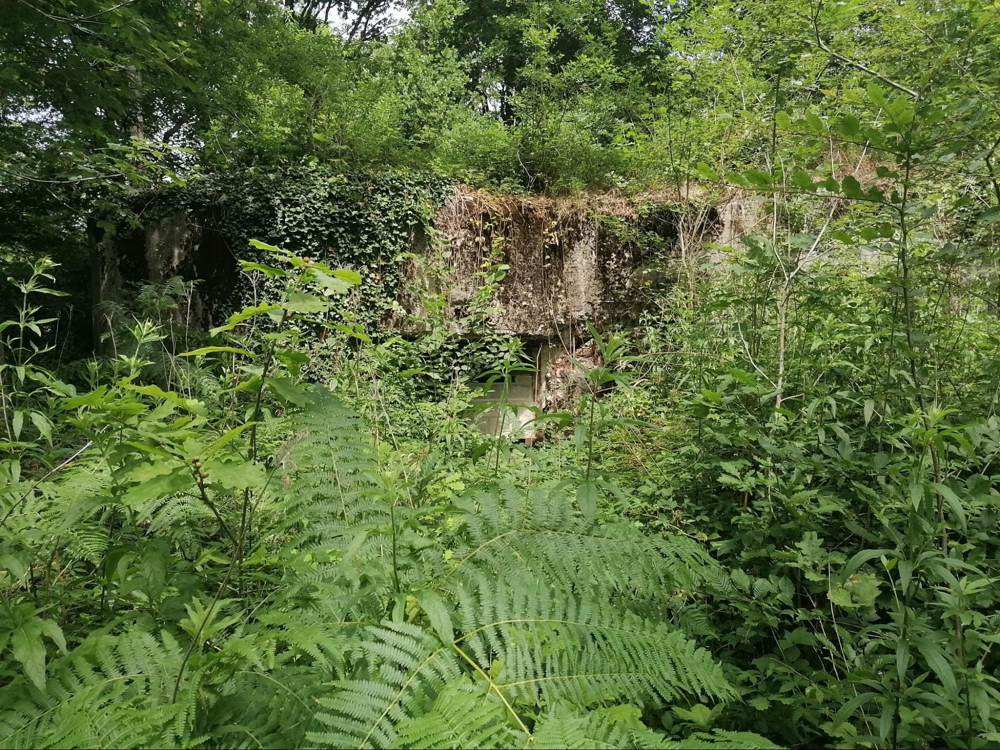
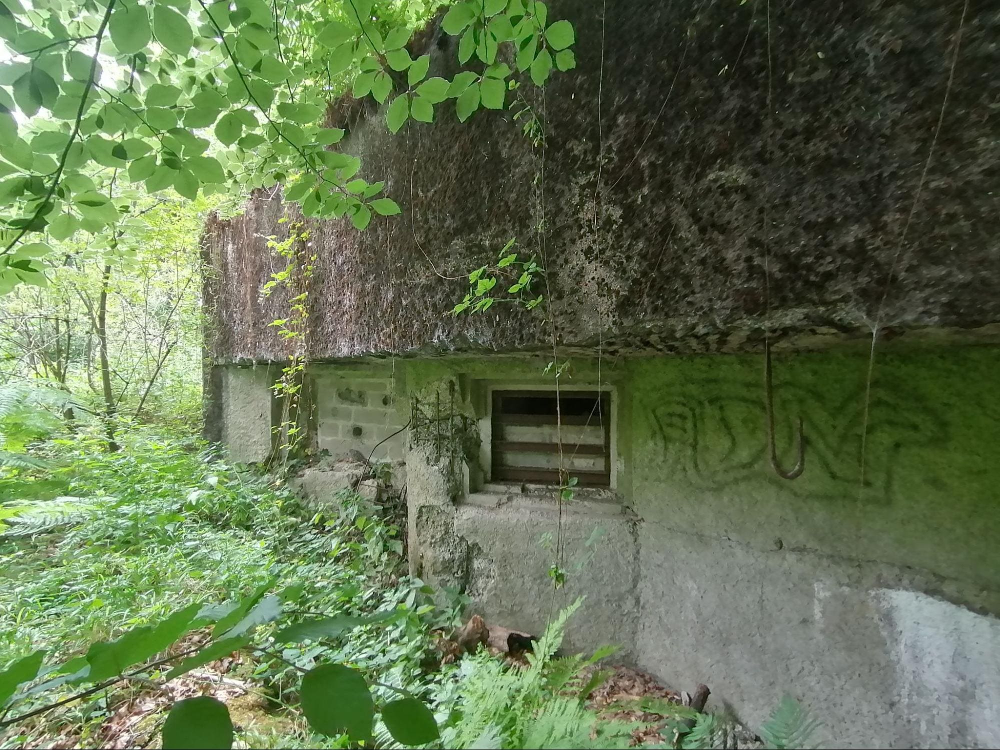
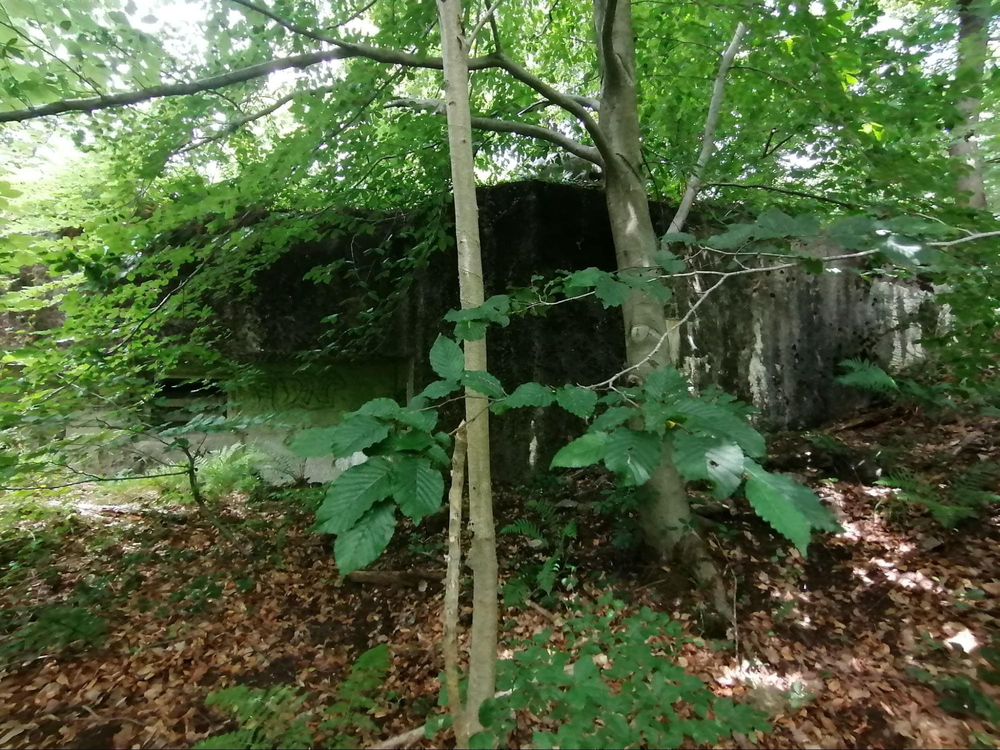
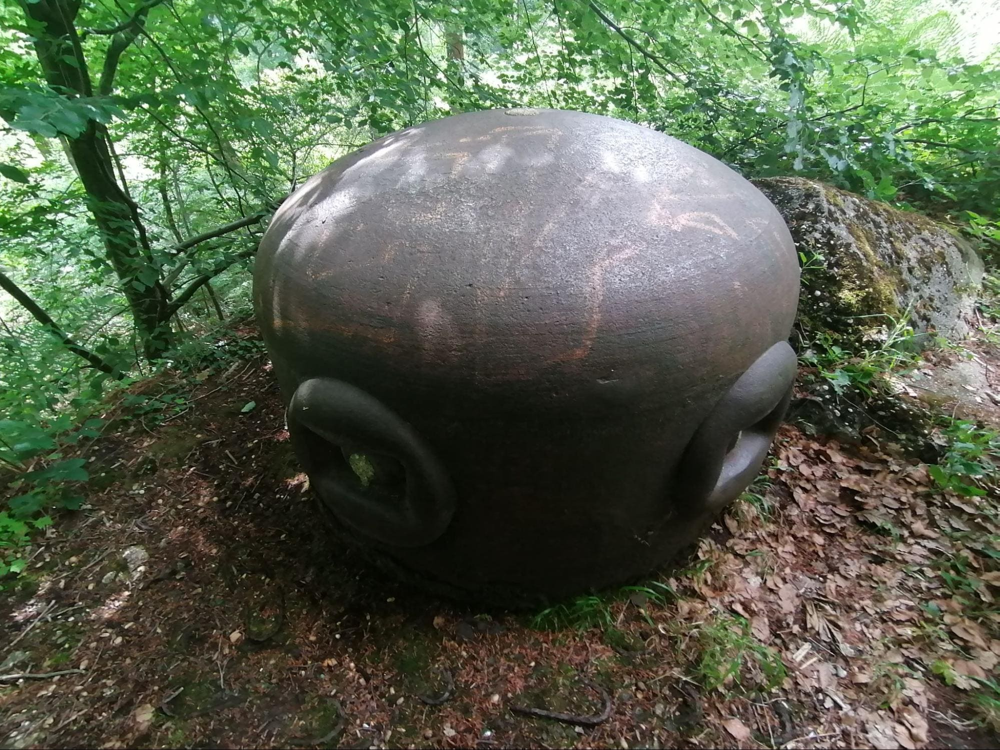
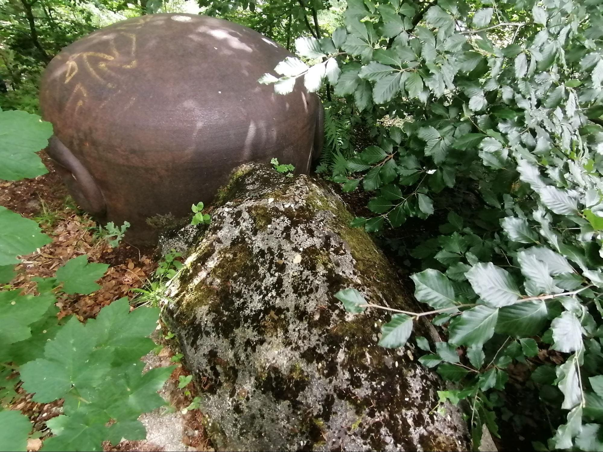

Casemate CORF de flanquement simple type Nord construite en 1932-34.
La casemate se trouve actuellement dans la forêt de Saint-Amand et sert maintenant d’abri à chauves-souris.

L'entrée.

Les créneaux.

Vue de la casemate (côté flanquement).

La cloche type A modifiée B.

Sources : Association Maginot Escaut, WikiMaginot, documents personnels.
Avertissement : L'exploration de ces ouvrages militaires est strictement déconseillée. Ces constructions anciennes, laissées à l'abandon, présentent des risques structurels majeurs (instabilité, effondrements, débris). De plus, ces lieux sont devenus des refuges naturels pour la faune, notamment les chauves-souris, dont la tranquillité doit être préservée. Votre sécurité est votre seule responsabilité ; toute entrée est aux risques et périls du visiteur.